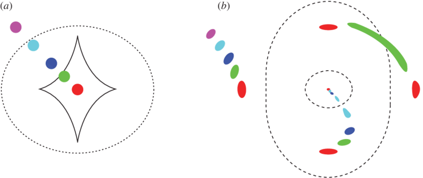

Lensed gravitational wave event rates
This document outlines the default settings for calculating detectable lensed gravitational wave event rates (per year) in LeR.
Notes:
For details on source properties and their distributions, please refer to the section titled “Gravitational Wave Event Rates.”
LeR’s calculation of lensed rates is loosely based on the methodology described in WIERDA et al. 2021.
Parameters in Consideration:
Source properties:
\(z_s\): Source redshift.
\(\theta\): Gravitational wave source parameters. \(\theta \in \{\) \(m_1\) (mass of the heavier one), \(m_2\) (mass of the lighter one), \(\mathcal{D}_L\) (luminosity distance), \(\iota\) (inclination-angle), \(\phi\) (phase-of-coalescence), \(\psi\) (polarization-angle), \(ra\) (right-ascension), \(dec\) (declination) \(\}\), \(t\) (time-of-coalescence).
\(R_o^U(z_s)\): Normalized merger-rate distribution (source-frame).
Lensing related:
\(\text{SL}\): Strong lensing condition.
\(z_L\): Redshift of the galaxy lens.
\(R_o^L(z_s)\): Merger rate distribution with optical depth applied for lensed events.
\(\mathcal{O}\): Detectability condition, determining whether an event is observable based on specific criteria.
\(\theta_L\): Parameters characterizing the lens galaxy. \(\theta_L \in \{\) \(\sigma\) (velocity-dispersion), \(q\) (axis-ratio), \(\psi\) (axis-rotation), \(\gamma\) (mass density spectral-index), \([\gamma_1,\gamma_2]\) (external-shear), \([e_1,e_2]\) (ellipticity), \(\beta\) (source position) \(\}\)
\(\beta\): Position of the source in the source plane, relative to the lens.
\(\mu_i\): Magnifications of the lensed images.
\(\Delta t_i\): Time delays between the lensed images.
Others:
\(\mathcal{N}^L\): Normalizing factor.
\(P\): Prior distribution.
\(\rho(z_s,\theta,\mu_i,\Delta t_i)\): Network optimal SNR of \(i^{th}\) lensed image.
\(\rho_{th}\): SNR threshold.
Default cosmology: LambdaCDM(H0=70, Om0=0.3, Ode0=0.7). But, it can be changed by the user at LeR initialization.
Lensed merger rate distribution of compact binary coalescences
This is very similar to the unlensed merger rate distribution, but with the optical depth applied for lensed events. Optical depth (\(\tau(z-s)=P(\text{SL}|z_s)\)) is the probability that a source at redshift \(z_s\) is strongly lensed by a galaxy. The lensed merger rate distribution is given by:
\begin{equation} R_o^L(z_s) = \frac{1}{\mathcal{N}^L} \frac{R_m(z_s)}{1+z_s} \frac{dV_c}{dz_s} \tau(z_s) \tag{1} \end{equation}
Where, the normalizing factor is given by:
\begin{equation} \mathcal{N}^L = \int_{z_{\text{min}}}^{z_{\text{max}}} dz_s \frac{R_m(z_s)}{1+z_s} \frac{dV_c}{dz_s} \tau(z_s) \tag{2} \end{equation}
Source redshifts for lensed case are sample from an astrophysical distribution, and rejection sample based on the optical depth. The plot below shows the comparision of the lensed and unlensed merger rate distributions.
Annual Rate of Detectable Lensed Gravitational Wave Events
The annual rate of detectable lensed gravitational wave events, denoted by \(R_L\), quantifies the expected number of lensed events observable by gravitational wave detectors within a year. This rate is given by the following equation:
\begin{equation} \begin{split} R_L = \mathcal{N}^L \int & dz_s R_o^L(z_s) \,\mathcal{O}_{\text{images}}(z_s,\theta,\mu_i,\Delta t_i, \rho_{th}) \, \\ & \, P(\theta) P(\theta_L, z_L|\text{SL},z_s) P(\beta|\text{SL}) d\theta d\beta dz_L d\theta_L dz_s \end{split} \tag{3} \end{equation}
Key aspects of this equation include:
SNR Operator, \(\mathbf{\mathcal{O}_{\text{images}}(z_s,\theta,\mu_i,\Delta t_i, \rho{th})}\): This function determines whether the lensed GW event is detectable based on their signal-to-noise ratios (SNRs) of the images. It is a logical operator that assesses the observability of each lensed image. Refer to the next sub-section for more details.
Prior Distribution, \(\mathbf{P(\theta)}\), \(\mathbf{P(\theta_L, z_L|\text{SL},z_s)}\), and \(\mathbf{P(\beta|\text{SL})}\): These represent the probability distributions of the GW source parameters, lens parameters (including the lens redshift \(z_L\)), and source position, respectively, under the strong lensing condition (SL). The source position, \(\beta\), denotes the angular position of the source in the source plane, relative to the lens’s center. These prior distributions of source and lens properties are assumed to be normalized.
Normalized Merger-Rate Distribution, \(\mathbf{R_o^L(z_s)}\): This function represents the merger rate density of lensed GW events (in the source frame) normalized with respect to the redshift \(z_s\). The normalization factor, \(\mathcal{N}^L\), ensures that the integrated rate \(R_L\) is properly scaled.
The calculation of \(R_L\) involves integration over the source redshift \(z_s\), the GW source parameters \(\theta\), the lens parameters \(\theta_L\) and lens redshift \(z_L\), and the source position \(\beta\). This integration accounts for the contributions from all detectable lensed events across different redshifts and parameter configurations, providing a comprehensive estimate of the annual rate of detectable lensed GW events.
SNR Operator for Lensed Gravitational Wave Events
The SNR operator, denoted as \(\mathcal{O}\), is used to determine the detectability of lensed gravitational wave (GW) events based on their signal-to-noise ratios (SNRs). By default, the operator is configured to assess the detectability of events with two lensed images, although this can be adjusted to accommodate events with three or four images. A lensed GW event is considered detectable if at least two of its images have SNRs that exceed a predefined threshold (\(\rho_{th}\)), referred to as two super-threshold events.
SNR operator over all images is defined as follows:
\begin{equation} \begin{split} \end{split}\tag{4} \end{equation}
In this definition: * \(\Theta\) represents the Heaviside step function, which evaluates to 1 if its argument is greater than or equal to zero, and 0 otherwise. * \(\rho(z_s,\theta,\mu_i,\Delta t_i)\) is the SNR of the \(i_{\text{th}}\) image. When a GW signal is lensed, it splits into multiple images, each with altered properties. The effective luminosity distance for the \(i_{\text{th}}\) image is given by \(\mathcal{D}_{L,i}^{eff} = \mathcal{D}_L / \sqrt{|\mu_i|}\), where \(\mathcal{D}_L\) is the original luminosity distance and \(\mu_i\) is the magnification of the image. Similarly, the effective geocentric time for the \(i_{\text{th}}\) image is \(t_i^{eff} = t + \Delta t_i\), where \(t\) is the original time of arrival and \(\Delta t_i\) is the time delay of the image.
This SNR operator plays a crucial role in the analysis of lensed GW events, as it helps to identify events that are sufficiently strong to be detected by GW observatories.
Sampling Lens Properties
In LeR, we consider elliptical galaxy lenses with a power-law mass-density distribution and external shear, also refer to as EPL+Shear lens. The sampling methods for the lens parameters are summarized in the following tables. Note that \(D_l^c\) and \(D_s^c\) are the comoving distances to the lens and source, respectively.
Table I: Lens Redshift and Physical Parameters
Parameter |
unit |
sampling method |
range |
|---|---|---|---|
\(z_l\): Lens redshift |
None |
1. \(r\) from \(P(x)=30x^2(1-x)^2\)2. Sacling: \(D_l^c=r D_s^c\)3. \(D_l^c\rightarrow z_l\) with default cosmology |
[0,\(z_s\)] |
\(\sigma\): velocity dispersion |
km s-1 |
\(\pi(\sigma_l, z_l)=\phi(\sigma_l, z_l)\frac{dV(z_l)}{dz_l}\)refer to Wempe et al. 2022 |
[0,600] |
\(q\): axis-ratio |
None |
1. \(b\) from Rayleigh distribution,\(P(b)=\frac{b}{s^2} \exp(-\frac{b^2}{2s^2})\)where \(s=0.38-0.09177a\) and\(a=\sigma/161\)2. \(q=1-b\) |
[0.2,1] |
The cross-section (\(\mathcal{S}\)) of a SIE lens, along with the Einstein radius (\(\theta_E\)), is calculated using the following equations. \(\mathcal{S}\) determines the probability of a source being lensed by a galaxy, and \(\theta_E\) is defined as the angular radius of the ring-like image (known as the Einstein ring) formed when a distant light source, a lensing galaxy, and an observer are perfectly aligned. In the equation, \(D_{Ls}\) and \(D_s\) are the angular diameter distances from the lens to the source and from the observer to the source, respectively, \(c\) is the speed of light. \(\phi^{SIE}_{CUT}(q)\) is derived from the expression given in Fei Xu et al. 2022.
\begin{equation} \begin{split} \mathcal{S}(\theta_E) &= \pi \theta_E^2 \frac{\phi^{SIE}_{CUT}(q)}{\pi} \\ \theta_E &= \frac{4\pi \sigma^2}{c^2}\frac{D_{Ls}}{D_s} \end{split}\tag{5} \end{equation}
Lens parameters in Table I are rejection sampled based on the strong lensing condition. A value is sampled from Uniform[0, max(\(\mathcal{S}\))] and is selected if it is less than \(\mathcal{S}\).
Table II: Orientation, density and Shear Parameters
Parameter |
unit |
sampling method |
range |
|---|---|---|---|
\(\phi\): axis-rotation-angle |
radian |
Uniform |
[0,2 \(\pi\)] |
\(\gamma\): mass density spectral-index |
None |
Normal dist.with mean=2, std=0.2 |
None |
\([\gamma_1,\gamma_2]\): external-shear |
None |
Normal dist.with mean=0, std=0.05 |
None |
The orientation angle (\(\phi\)) and axis ratio (\(q\)) are transformed into complex ellipticity moduli \(e_1\) and \(e_2\) as follows:
\begin{equation} \begin{split} e_1 &= \frac{1-q}{1+q} \cos(2\phi) \\ e_2 &= \frac{1-q}{1+q} \sin(2\phi) \end{split}\tag{6} \end{equation}
Sampling of Source Position
Source position (\(\beta\)) is sampled from a uniform distribution within the caustic region of the source plane. The caustic boundary is defined as the region in the source plane where the magnification of the lensed images is infinite. The caustic region is determined by the lens parameters and the source redshift. The caustic region is calculated using Lenstronomy. The following figure shows the source position and image positions in caustic region, img
ref. The image below illustrates the formation of multiple images by a strong elliptical lens. Panel (a) shows the view in the source plane, where different source positions are marked by colored dots, and the lines depict the lensing caustics. Panel (b) presents the view in the image plane as observed by an observer; here, the dotted lines represent critical
lines corresponding to the given source distance. The colored multiple images in the image plane correspond to the varying positions of the source in the source plane. As the source moves closer to a caustic, the number of multiple images increases.

Souce position in lens plane : \(\beta = [x,y] = [\eta\,cos(\phi),\eta\,sin(\phi)]\). Sampling methods is given in the following table.
Table III: Source Position Parameters |Parameter | unit | sampling method | | :-: | :-: | :-: | | \(\eta\) | \(\theta_E\) | within caustic | | \(\phi\) | radian | within caustic |
Calculation of Images properties
The properties of the lensed images, such as the magnifications (\(\mu_i\)) and time delays (\(\Delta t_i\)), are calculated using the lens and source parameters. The magnification of the \(i_{\text{th}}\) image is given by \(\mu_i = \frac{1}{det(A)}\), where \(A\) is the Jacobian matrix of the lens mapping. The time delay between the \(i_{\text{th}}\) image and the primary image is given by \(\Delta t_i = \frac{1+z_L}{c} \frac{D_l^c D_s^c}{D_{ls}^c} \frac{1}{2} (|\beta-\beta_i|^2-\theta_E^2)\), where \(\beta_i\) is the position of the \(i_{\text{th}}\) image in the source plane. The primary image is the image with the smallest absolute value of the magnification. The time delay is calculated with respect to the primary image.
Montecarlo integration (lensed events)
With step function.
\begin{equation} \begin{split} R_L &= \mathcal{N}^U \left< \mathcal{O}_{images}(z_s,\theta,\mu_i,\Delta t_i, \rho_{th})\,\right>_{z_s,z_L,\theta,\theta_L \in \text{Sampled}[z_s,z_L,\theta,\theta_L]} \\ &= \frac{\mathcal{N}^U}{N} \sum_i \mathcal{O}_{images}(z_s,\theta,\mu_i,\Delta t_i, \rho_{th}) \end{split} \tag{8} \end{equation}
With Pdet.
\begin{equation} \begin{split} R_L &= \mathcal{N}^U \left< \,P_{det}^{max(\rho)_1} \,P_{det}^{max(\rho)_2} \,\right>_{z_s,z_L,\theta,\theta_L \in \text{Sampled}[z_s,z_L,\theta,\theta_L]} \\ &= \frac{\mathcal{N}^U}{N} \sum_i \,P_{det}^{max(\rho)_1} \,P_{det}^{max(\rho)_2} \end{split} \tag{9} \end{equation}
\(max(\rho)_1\) : \(1^{st}\) maximum SNR out of all the images for the given parameters {\(z_s,z_L,\theta,\theta_L\)}.
\(max(\rho)_2\) : \(2^{st}\) maximum SNR out of all the images for the given parameters {\(z_s,z_L,\theta,\theta_L\)}.
\(\rho_{th}\) for \(max(\rho)_2\) can lower than that of \(max(\rho)_1\) if it is a subthreshhold search.